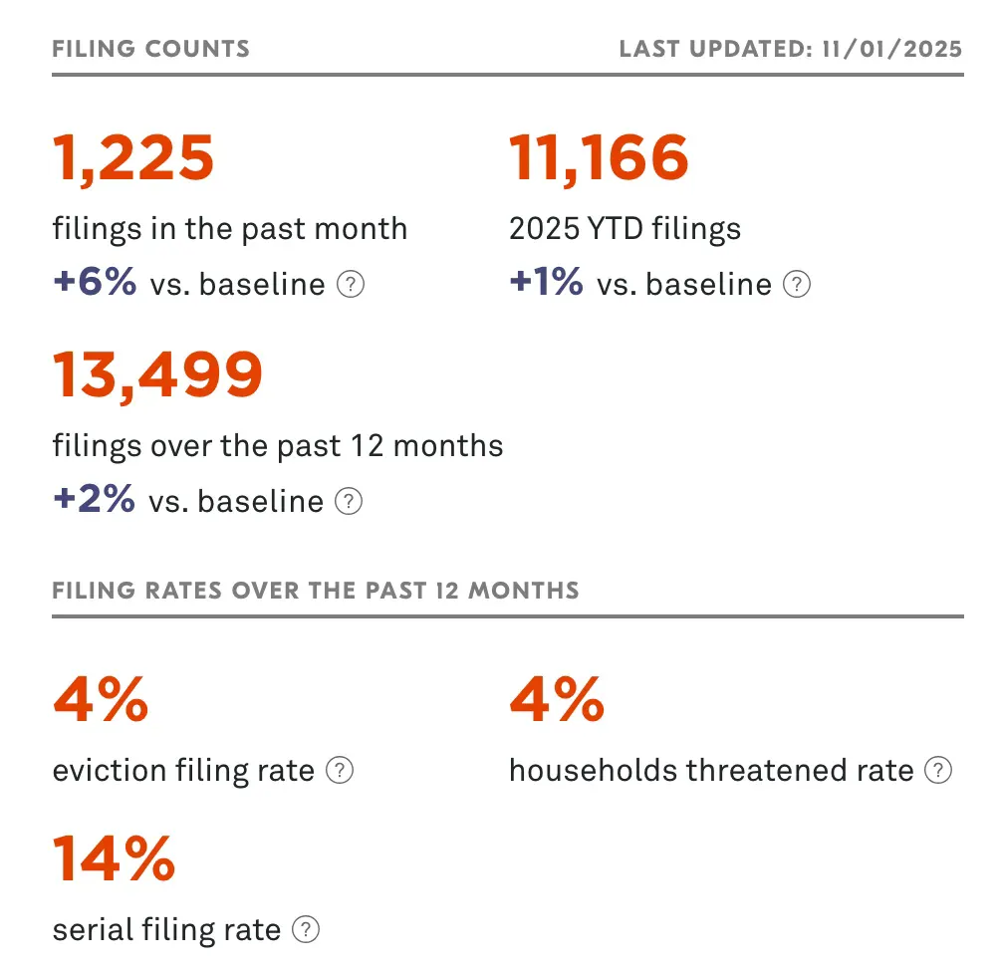
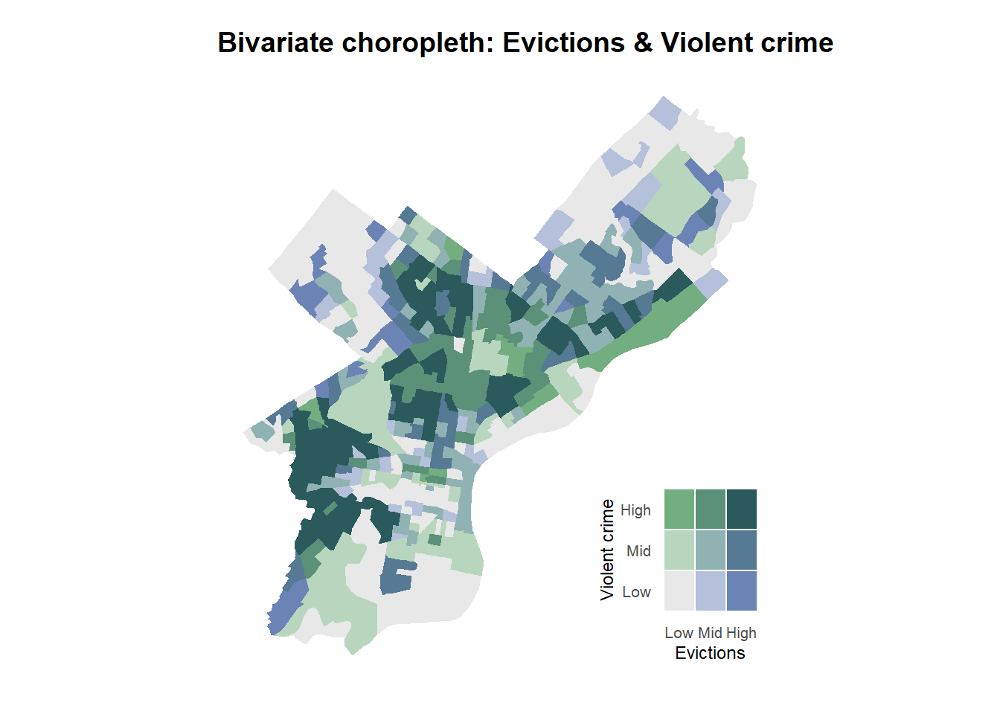
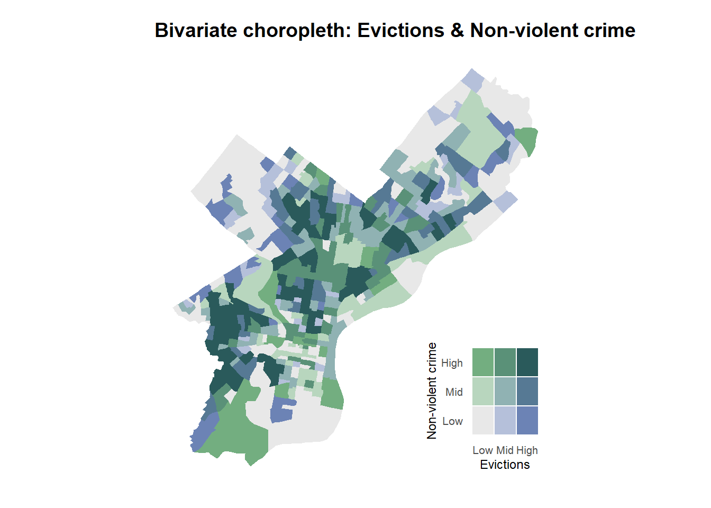

Predicting Eviction Risk in Philadelphia
(JMC)^2 Team
Final Challenge: Predicting Evictions
Iron Chef × Shark Tank × Kaggle
- Secret ingredient: Philadelphia eviction data
- Goal: Build a predictive model that city officials could actually use
- Our focus: Eviction risk in Philadelphia
Roadmap
Eviction in Philadelphia
Policy Context
Data & Feature Construction
Modeling Strategy
Results: How good is the model?
Limitations
Recommendations & Implementation
Eviction and Policy Context
The Eviction Crisis in Philadelphia

Source: LSC Evictions Law Database (Last updated: 11/01/2025
Policy Context
Source: City of Philadelphia Website
Eviction filings are down approximately 40%.
Landlords and tenants reach agreements in approximately 70% of the cases where they participate in mediation.
Data Sources & Integration
Data Source
Philadelphia Eviction Data Source: Eviction Lab Philadelphia tracking data, 2020-2025, monthly
Socioeconomic Data (ACS data): 2023 5-Year American Community Survey (ACS) from the United States Census Bureau
Philadelphia Crime Data: Philadelphia crime data for 2020-2025 from Open Data Philly
311 Calls Data (Eviction-relevant): Philadelphia 311 Service and Information Requests from 2020-2015
Tax Data: Philadelphia real estate tax balances data by Census Tract from Open Data Philly
Data Cleaning & Filtering
- 311 Data Filtering:
- Clean 311 data and create a small set of “eviction-relevant” 311 indicators (e.g., Sanitation / neighborhood disorder; Housing condition / disrepair; Safety hazards).
- Crime Data Filtering:
- Classify crime data into violent and non-violent crimes based on violent type.
- ACS Data Filtering:
- Filter the tract level ACS data and computes six key socioeconomic variables: poverty rate, unemployment rate, renter share, vacancy rate, rent burden (30%), and nonwhite population share.
Exploratory Data Analysis
Bivariate Maps of Eviction and Crime Types


- North & West Philadelphia show both high evictions and high crime.
- Low evictions + low crime in South, Northwest & Northeast.
- The High-Low and Low-High tracts are areas that evictions can hardly be explained by violent.
Spatial Dependence & LISA Map
The result from global Moran’s I test indicated that there is a significant spatial autocorrelation exist in evictions data

Feature Engineering
Flag for Vulnerabe Tract

Spatial and temporal features
- Spatial features:
- Distance to Hotspots (High–High) and Coldspots (Low-Low) from LISA map
- Spatially lagged temporal lags (Spatio-Temporal Lag)
- Temporal features:
- Temporal Lags for 1 month, 3 months, 6 months, and 12 months
Modeling Strategy
Model Specification
| Component | Description |
|---|---|
| Models | Poisson and Negative Binomial models (handle over-dispersion) |
| Target Variable | Evictions (monthly eviction counts at the tract level) |
| Candidate Predictors | Violent and non-violent crime incidents; 311 service calls; Poverty rate, unemployment rate, renter share, vacancy rate, rent burden (30%), nonwhite population share, vulnerability flag; Distance to the nearest hot spot and cold spot; median gross rent, median home value; Number of tax-delinquent properties, average tax balance, total tax penalties. |
| Temporal Lags | 1-, 3-, 6-, and 12-month lags of the target variable |
| Spatio-Temporal Lags | Spatio-temporal lags (spatially lagged temporal lags, W × past values) capturing spatial dependence |
Training and validation
- Train–test split:
- We use a forward-chaining temporal split to respect the time ordering of the data and avoid information leakage.
- All observations from 2020 to 2024 are used for model training and all observations from 2025 are held out for testing.
- Spatial Cross-validation:
- We use spatial cross-validation to ensure that model performance generalizes across geographic areas.
- Each census tract is randomly assigned to one of K = 10 spatial folds and all months for a tract are placed in the same fold to avoid leakage across time.
- Baseline comparison:
- Baseline models: Poisson and NegBin models using only contemporaneous predictors.
- Add temporal lags: Add 1-, 3-, 6-, and 12-month lags.
- Add spatio-temporal lags
Model Performance
How well does the model predict?
| Model | MAE | RMSE |
|---|---|---|
| Poisson (baseline) | 1.943 | 2.827 |
| NegBin (baseline) | 1.961 | 2.856 |
| Poisson (+ temporal lags) | 1.752 | 2.522 |
| NegBin (+ temporal lags) | 1.822 | 2.961 |
| Poisson (+ temporal + spatio-temporal lags) | 1.756 | 2.527 |
| NegBin (+ temporal + spatio-temporal lags) | 1.817 | 2.892 |
Performance across the city
Where the Model Struggles?

Limitations
Key Limitations
- Pandemic artifacts: Model trained on 2020-2025 (moratoriums, emergency programs). Patterns may not reflect baseline behavior.
- Spatial mismatch: We predict at census tract level, but RTC program operates by zip code.
- Missing detailed-data: We have filing counts, not record-level data on tenants, landlords, or outcomes.
- Historical bias risk: Model learns from past patterns—which reflect decades of discrimination. Could automate inequality if not careful.
Recommendations & Implementation
How the City Can Use This
Monthly Predictions Department of Planning and Development generates tract-level eviction risk forecasts. Which areas will see elevated filings in the next 30-90 days?
Concentrate Resources Target outreach, mediation capacity, and rental assistance to high-risk tracts. Use risk maps to design where to pilot new rental assistance or mediation programs. Amplify where need is highest—don’t abandon low-risk areas.
Bottom line: Eviction risk is predictable, concentrated, and actionable with oversight.
Q & A
Thank you.